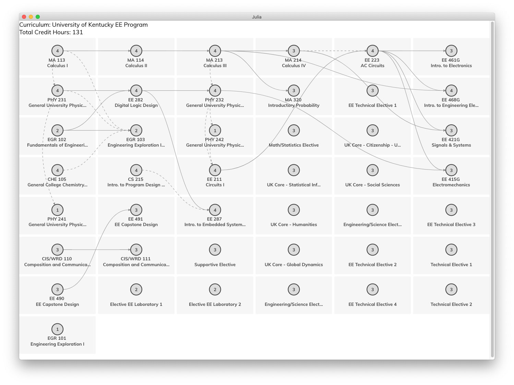
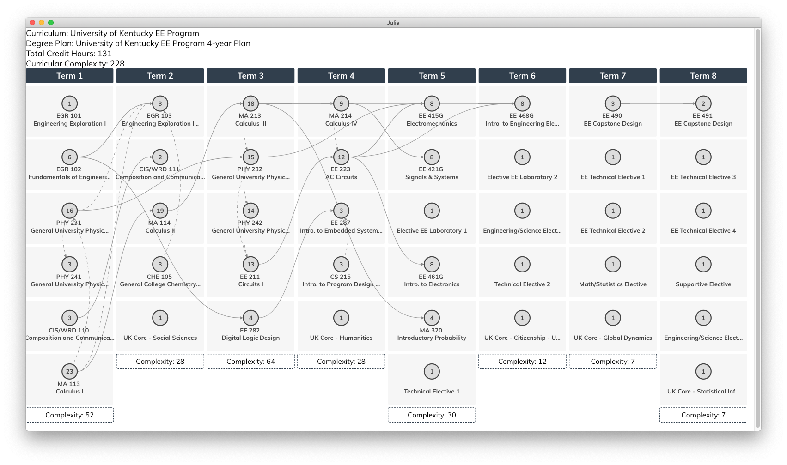
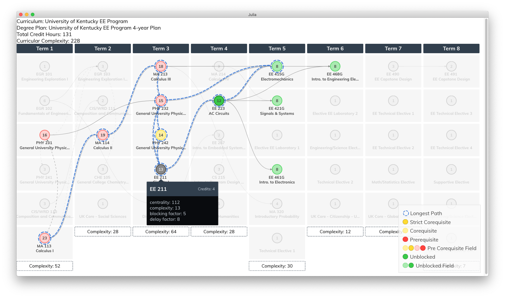

Visualizing Curricula and Degree Plans
In order to visualize curricula and degree plans, you must first install Blink.jl. For instructions on how to do this, see the Installation section.
Visualization Functions
CurricularAnalytics.visualize — Function visualize(curriculum; <keyword arguments>))Visualize a curriculum.
Arguments
Required:
curriculum::Curriculum: the curriculum to visualize.
Keyword:
changed: callback function argument, called whenever the curriculum is modified through the interface. Default isnothing.notebook: a Boolean argument, if set totrue, Blink will not create a new window for the visualization, which allows it to be displayed in the output cell of a Jupyter notebook.edit: a Boolean argument, if set totrue, the user may edit the curriculum through the visualziation interface. Default isfalse.output_file: the relative or absolute path to the CSV file that will store the edited curriculum. Default isedited_curriculum.csv.show_delay: a Boolean argument, if set totrue, the delay factor metric will be displayed in the tooltip when hovering over a course. Default isfalse.show_blocking: a Boolean argument, if set totrue, the blocking factor metric will be displayed in the tooltip when hovering over a course. Default isfalse.show_centrality: a Boolean argument, if set totrue, the centrality metric will be displayed in the tooltip when hovering over a course. Default isfalse.show_complexity: a Boolean argument, if set totrue, the complexity metric will be displayed in the tooltip when hovering over a course. Default isfalse.scale: a Real value used to scale the size of the output window.
visualize(degree_plan; <keyword arguments>))Visualize a degree plan.
Arguments
Required:
degree_plan::DegreePlan: the degree plan to visualize.
Keyword:
changed: callback function argument, called whenever the degree plan is modified through the interface. Default isnothing.notebook: a Boolean argument, if set totrue, Blink will not create a new window for the visualization, which allows it to be displayed in the output cell of a Jupyter notebook.edit: a Boolean argument, if set totrue, the user may edit the degree plan through the visualziation interface. Default isfalse.output_file: the relative or absolute path to the CSV file that will store the edited degree plan. Default isedited_degree_plan.csv.show_delay: a Boolean argument, if set totrue, the delay factor metric will be displayed in the tooltip when hovering over a course. Default istrue.show_blocking: a Boolean argument, if set totrue, the blocking factor metric will be displayed in the tooltip when hovering over a course. Default istrue.show_centrality: a Boolean argument, if set totrue, the centrality metric will be displayed in the tooltip when hovering over a course. Default istrue.show_complexity: a Boolean argument, if set totrue, the complexity metric will be displayed in the tooltip when hovering over a course. Default istrue.scale: a Real value used to scale the size of the output window.
Examples
An example curriculum for an electrical engineering program is provided in the examples directory of this toolbox. To visualize this curriculum, execute the following commands:
julia> curric = read_csv("./examples/UKY_EE_curric.csv")
julia> visualize(curric)This should produce the following window: 
An example eight-term degree plan for the electrical engineering curriculum shown above is also provided in the examples directory of this toolbox. To visualize this degree plan, execute the following commands:
julia> curric = read_csv("./examples/UKY_EE_plan.csv")
julia> visualize(dp)This should produce the following window: 
In order to visualize the various metrics associated with this degree plan, simply hover your mouse over a course, as shown below: 
To learn more about the metrics displayed in this visualization, see the Metrics section.